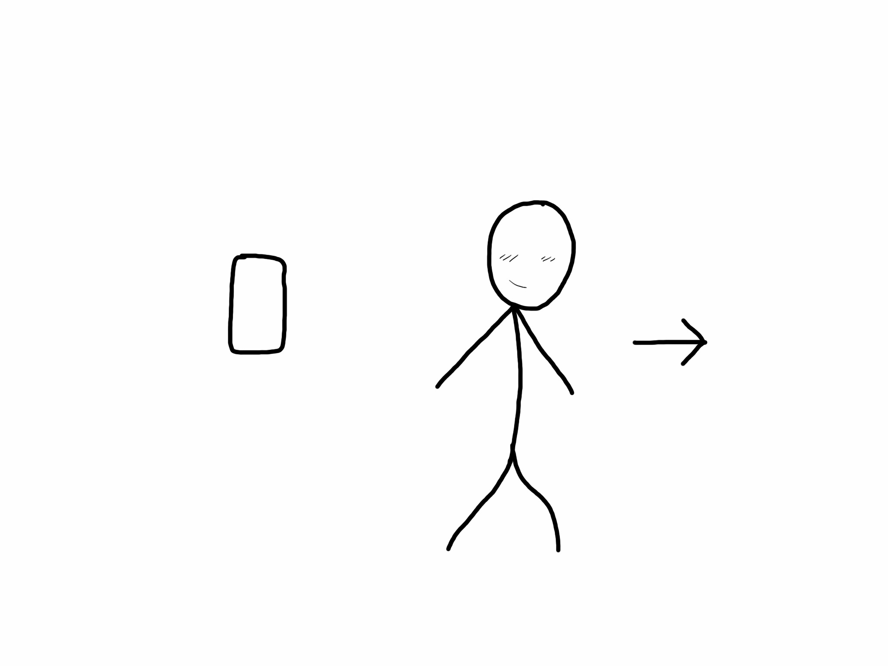
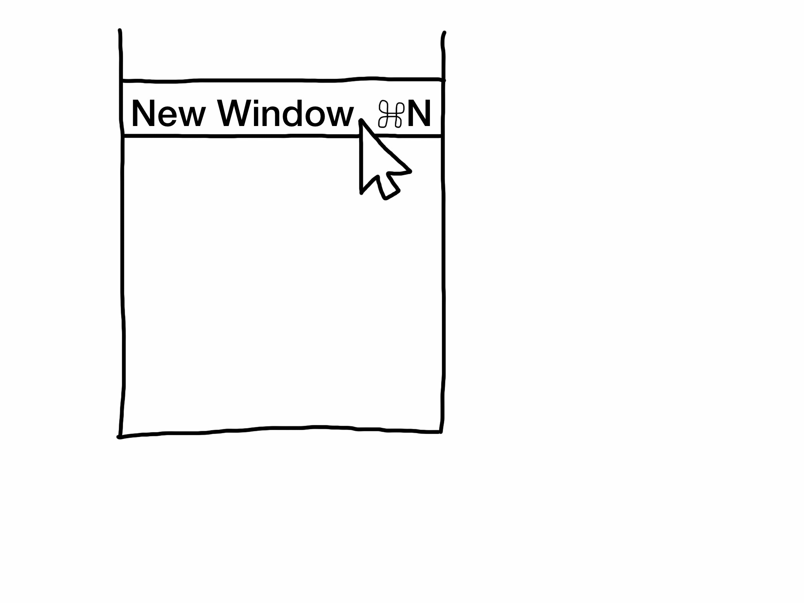
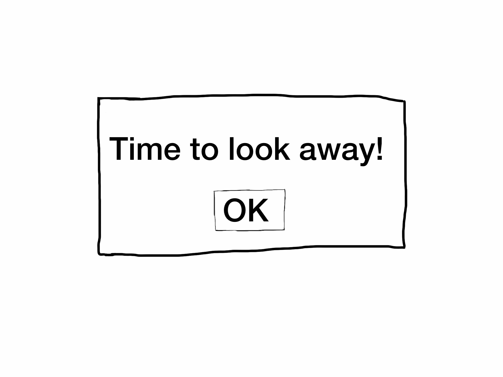
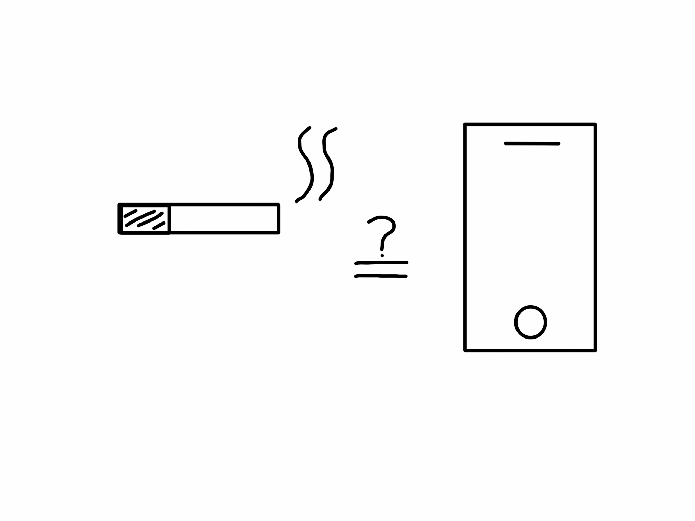
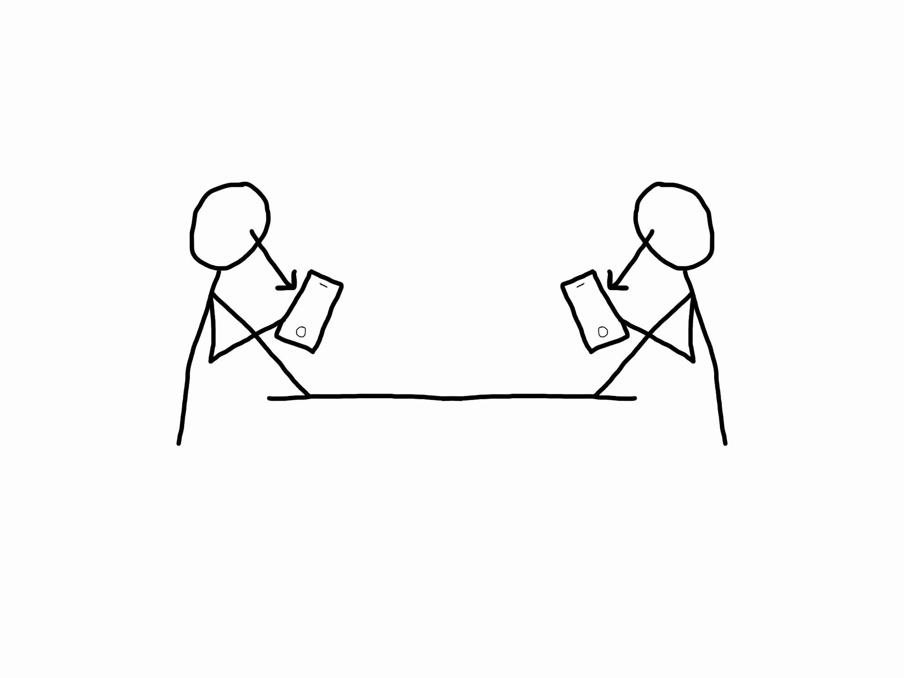
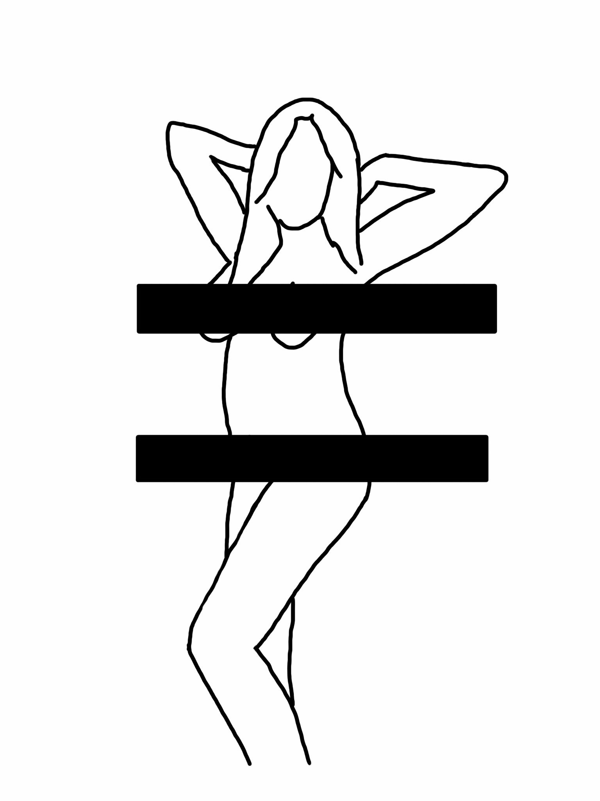
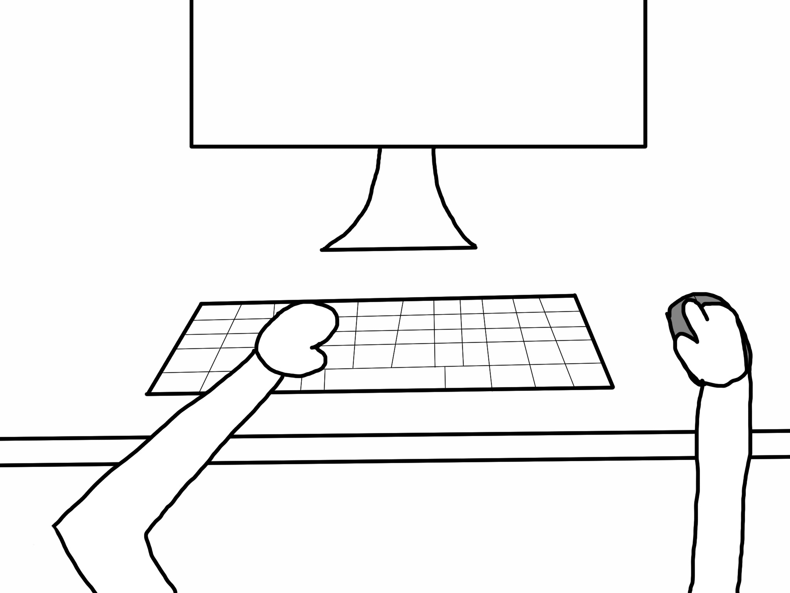
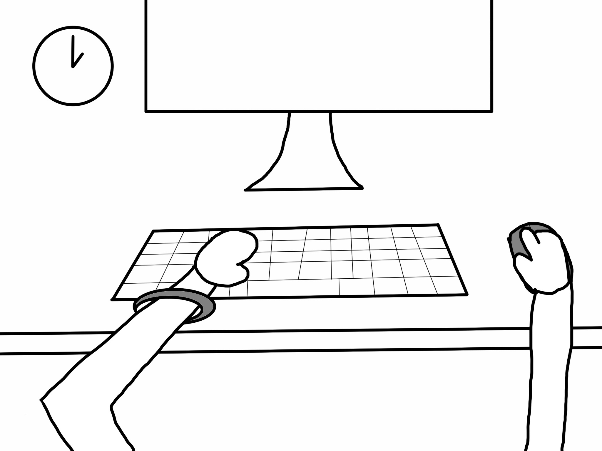

Some external force spams account/phone or hacks it, forcing the device to be temporarily locked.
With a locked service or device, the user is forced away from the service/device.
2. Altering /etc/hosts to deny access to time consuming sites at a systems level
Ask for 'https://example.com' from system. System doesn't know. Ask DNS. Retrieve IP & show content.
Alter /etc/hosts so that the domain name will resolve to localhost (127.0.0.1).
Ask for 'https://example.com' from system. System returns localhost IP. No content is shown.
3. A cat-girl (or other character) pop-up that asks you to get off your phone
A user on their device.
After a certain amount of time, a cute character appears on screen, blocking content. The user has an attachment to the character, and wants to please them. (A "no" would resume the activity but would cause a negative reaction.)

The user happily stops using their device to do something else.
4. Making someone's cursor/pointer really slow
Normal mouse speed. The digital movement is a >1 multiplier of the physical mouse movement.
Slow mouse speed. The digital movement is a fraction of the physical mouse movement. This requires a lot of effort from the user.
Frustrated, the user leaves.
5. Closing windows as soon as you open them

The user opens a new window (in a broswer).
while(true) {
if (window.isOpen) {
window.close
}
}
This confuses and eventually frustrates the user; the user gives up and leaves.
6. Enabling Guided Access (in iOS settings) that locks the device to the phone app
Turn on Guided Access in Accessibility settings.
The phone is locked so that only the phone app can be used (it cannot be closed either).
The phone's functions become restricted, making it only usable when necessary.
7. A notification filter that learns from your behavior
The user receives an overwhelming number of notifications but only cares about a few.
An artificial intelligence/machine learning system notices which notifications the user actually reacts to and develops a filter based on that.
The AI filters notifications. For important or urgent notifications, the user is notified. Otherwise, notifications come in silently (no interruptions). They could be summarized or grouped for the user to view later.
8. A phone case that drains your phone faster as you use it but charges your phone while it is put away
While the user uses the phone, the case drains battery from the phone (beyond drain from phone use).
When the phone is in the user's pocket or put away, the case returns power and charges the phone.
If the user wants to keep the phone charged, they need to put it away. Introduces an incentive to minimze time the phone is in use.
9. Lecture hall seating that require you to plug in your phone to make the desk appear
Lecture seats without desks have a slot for phones in the arm rest.
When a student inserts their phone, a desk pops up. To retrieve a phone, the student must return the desk.
End result: students aren't on their phones in lecture.
10. Generate pop-ups on time consuming websites
A time consuming site.
Generate pop-ups & pop-unders when the user visits that site.
Annoyed, the user will stop using the site.
11. An application that reminds you to look away from your computer every 20 minutes for 20 seconds

12. A phone garage for driving that locks your phone away but still lets you know when you have notifications
13. Requiring a phone to be placed face down in order to play music/audio
14. In a world with folding screens, a phone that is also your wallet (think bi-fold wallet); deters people from walking around with their wallet-phone in their hand (because that is just asking for theft)
15. A phone that sorts apps so that when you are busy/working, it hides fun apps (games/social media) and when you are home/relaxing, it hides work-related apps
16. An anti-screen campaign that mimics anti-drug/tobacco campaigns

17. Glasses that tone down the color of screens (or make it black and white) but keep the rest of the world colorful
18. A phone case that gets really hot the longer you are on your phone
19. A place/space to put phones when eating at a table (with friends)

20. Make phones come flat-packed and only work when they are put together (bulky); you would deconstruct it to put it away
21. People-safe color palette
22. The longer someone is on the computer, the more likely a NSFW picture pops up

23. Something (like an app) that encourages you to go outside
24. A physical TV blocker
25. Instead of a text based reminder to take a break, why not have some kind of acting force (motion) to imply "look over there"
26. Physical (12-hour analog) clock that tracks screen time (connect via bluetooth)
27. An object that gets you away from the screen every 20 minutes (a robot that screams & makes you chase it to make it stop aka small children)
28. An odometer (tracks distance in car) but for screens; more long term than a clock
29. A bracelet or watch band that tracks screen time; glows brighter & stronger color (red) with more screen time; harder to avoid than something like a clock


30. Gradually diminish the amount of screen someone has; only resets when you leave
 The phone's functions become restricted, making it only usable when necessary.
The phone's functions become restricted, making it only usable when necessary.
 Lecture seats without desks have a slot for phones in the arm rest.
Lecture seats without desks have a slot for phones in the arm rest.
 When a student inserts their phone, a desk pops up. To retrieve a phone, the student must return the desk.
When a student inserts their phone, a desk pops up. To retrieve a phone, the student must return the desk.
 End result: students aren't on their phones in lecture.
End result: students aren't on their phones in lecture.